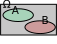
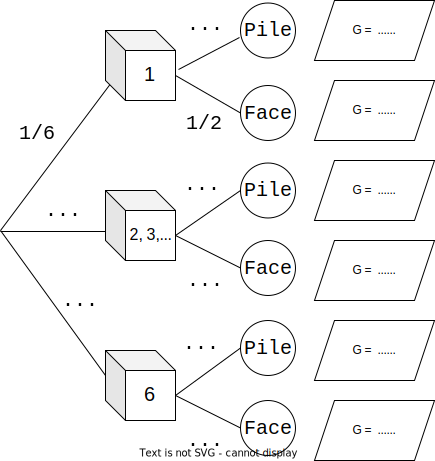
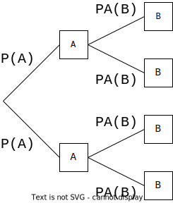

Même si des calculs concernant des risques ou des jeux de hasard ont été faits depuis l'antiquité, on date le
début de la théorie des probabilités de la correspondance entre Blaise Pascal et Pierre de Fermat (1654) à
propos du «problèmes des
partis».
Notion de modèle
On lance un dé cubique et on note le numéro de la face supérieure.
Cette expérience est une expérience aléatoire dont les issues (résultats possibles) sont 1, 2, 3,
4, 5, 6 :
Issue
1
2
3
4
5
6
Probabilité
\( \frac{1}{6} \)
\( \frac{1}{6} \)
\( \frac{1}{6} \)
\( \frac{1}{6} \)
\( \frac{1}{6} \)
\( \frac{1}{6} \)
Une réalisation (que l'on appelle «épreuve») de cette expérience (réalité ou simulation), doit forcément
aboutir à l'une de ses issues ; on ne sait pas laquelle exactement.
L'ensemble des issues est \( \Omega = \left\{1{,}\, 2{,}\, 3{,}\, 4{,}\, 5{,}\, 6 \right\} \).
Définir une probabilité, pour une expérience aléatoire, consiste à :
attribuer à chacune des issues \(x_i\) un nombre \(p_i\) positif ou nul, appelé probabilité de
\(x_i\), de sorte que l'on ait \( p_1+\cdots+p_n=1=100\% \)
Le dé suivant est truqué :
Issue
1
2
3
4
5
6
Probabilité
\( \frac{1}{10} \)
\( \frac{1}{10} \)
\( \frac{1}{10} \)
\( \frac{1}{10} \)
\( \frac{1}{10} \)
\( \ldots \)
Calculer \(p(6)\), la probabilité d'obtenir un six.
Il y a 86% d'élèves droitiers dans ce lycée.
Quelle est la probabilité de tomber au hasard sur un élève qui ne le soit pas ?
Notation somme : Une somme telle que \(p_1+\cdots+p_n\) se note, de manière condensée, à l'aide du
symbole sigma (\(\Sigma\)) : \( \displaystyle\sum_{i=1}^n p_i\)
Calculer \( A=\displaystyle\sum_{i=1}^7 i\) et \( B=\displaystyle\sum_{i=1}^4 i^2\)
(PISA) développer une intuition d'une probabilité :
Un géologue a affirmé :
«Au cours des 20 prochaines années, la probabilité que se produise un tremblement de terre à Springfield est de
2 sur 3»
Parmi les propositions suivantes, laquelle exprime le mieux ce que veut dire le géologue ?
Puisque \(\frac{2}{3}\times20\approx13{,}3\), un tremblement de terre aura lieu à Springfield dans 13 à
14 ans.
Puisque \(\frac{2}{3}>\frac{1}{2}\), on est sûr qu'il y aura un tremblement de terre à Springfield
dans les 20 ans.
La probabilité d'avoir un tremblement de terre dans cette ville est plus forte que celle de ne pas en
avoir.
On ne peut rien dire, car personne n'est sûr du moment où un tremblement de terre se produit.
Construire un modèle
Dans la grande majorité des cas, on utilise l'une de ces deux façons de déterminer les probabilités \(p_i\)
associées aux issues \(x_i\) :
Étude statistique - observer les fréquences
On lance un dé truqué un grand nombre de fois (10 000, par exemple) et on note le résultat dans le
tableau suivant :
Issue
1
2
3
4
5
6
Probabilité
\( 0{,}125 \)
\( 0{,}125 \)
\( 0{,}125 \)
\( 0{,}125 \)
\( 0{,}2 \)
\( 0{,}3 \)
On décide alors que l'on a expérimenté un nombre suffisant de lancers pour que les futurs lancers
de ce dé respectent les mêmes fréquences que celles de cette expérience. Cette «décision» établit un
modèle probabiliste : on peut remplacer le mot «Fréquence» (qui est du domaine de la statistique)
dans le tableau par le mot «probabilité».
Par le choix de l'équiprobabilité.
Le lancer d'une pièce de monnaie bien équilibrée :
Issue
pile
face
Probabilité
0,5
0,5
Dans une situation d'équiprobabilité, Toutes les issues possèdent la même
probabilité.
Étude statistique ou équiprobabilité ?
Le choix de l'équiprobabilité se fait lorsqu'il est suggéré dans l'énoncé (pièce équilibrée, tirage dans une
urne au hasard).
Si on est dans une situation où les probabilités de chaque issue n'ont aucune raison d'être les mêmes, on doit
mener une étude statistique.
Étude statistique ou équiprobabilité ? Le préciser.
On lance un dé bien bien équilibré.
On choisit au hasard une consonne dans l'alphabet.
Probabilité qu'un foyer français ait 2 enfants.
Tomber sur le zéro sur une roulette de casino (numérotée de 0 à 36).
Que M. Dupont, 40 ans, que l'on ne connaît pas, attrape la grippe l'hiver prochain ?
Qu'une tartine tombe du côté de la confiture ?
Prévoir
Probabilité d'un événement
On lance un dé cubique et l'on considère l'événement \(A\) : «obtenir au moins 5».
issues favorables à \(A\) (qui réalisent \(A\) ) sont 5 et 6 ; on note \(A=\left\{5;6\right\}\).
Pour le dé truqué (utilisé précédemment), si \(P(5)=0{,}2\) et \(P(6)=0{,}3\) alors
\(P(A)=0{,}2+0{,}3=0{,}5\) .
Pour un dé équilibré (situation d'équiprobabilité) : \(P(5)=P(6)=\frac{1}{6}\) alors
\(P(A)=\frac{1}{6}+\frac{1}{6}=\frac{1}{3}\)
Un événement \(A\) est un sous-ensemble (aussi appelée partie) de l'univers \(\Omega\) (on note
\(A\subset\Omega\), on dit «\(A\) inclus dans \(\Omega\)»).
La probabilité \(P(A)\) est la somme des probabilités des issues favorables à \(A\).
Pour tout événement \(A\), on a : \(0\leqslant P(A)\leqslant 1\)
On a \(P(\Omega)=1\).
L'événement \(B\) : «obtenir un \(7\) sur un dé est impossible : \(P(B)=0\). On identifie à
l'ensemble vide noté \(\emptyset\) tout événement impossible (\(B=\emptyset\)).
Dans une situation d'équiprobabilité, la probabilité d'un événement \(A\) est : \(P(A)=\frac{\textrm{nombre d'issues favorales à }A}{\textrm{nombre d'issues
possibles}}\)
Opérations sur les événements
Si \(A\) et \(B\) sont deux événements,
On note \(\overline{A}\) l'événement complémentaire de \(A\) (toutes les issues qui ne réalisent pas
\(A\).)
L'événement \(A\cap B\) est l'ensemble des issues qui réalisent \(A\) et \(B\) (simultanément).
L'événement \(A\cup B\) est l'ensemble des issues qui réalisent \(A\) ou \(B\) (au moins l'un des
deux).
On lance un dé cubique et équilibré, et on note les événements suivants :
Union quelconque :
\(P(A\cup B)=P(A)+P(B)-P(A\cap B)\)

Union disjointe :
Si \(P(A\cap B)=0\), alors \(P(A\cup B)=P(A)+P(B)\)
Lorsqu'on sait que \(A\) et \(B\) ne peuvent être réalisés simultanément ; \(A\) et \(B\) sont dits
incompatibles ; dans ce cas on a \(P(A\cap B)=0\).
\(A\) et \(B\) sont deux événements quelconques ; exprimer \(P(A\cap B)\) en fonction de \(P(A)\),
\(P(B)\) et \(P(A\cup B)\).
\(P(A)=0{,}7\) et \(P(B)=0{,}6\).
Montrer que \(A\) et \(B\) ne peuvent pas être incompatibles.
En dégager une condition sur les probabilités de \(A\) et \(B\) impliquant que ces deux événements soient
incompatibles.
Chaque ligne du tableau représente une situation différente. Compléter le tableau.
\(A\)
\(B\)
\(\overline{A}\)
\(\overline{B}\)
\(A \cap B\)
\(A \cup B \)
0,2
0,5
0,1
0,6
0,6
0
0,7
0,7
0,5
0,8
0,2
0,4
Si \(A\) et \(B\) sont deux événements quelconques, on a toujours :
\(P(A\cap B)\leqslant \begin{array}{c}P(A)\\P(B)\\ \end{array}\leqslant P(A\cup B)\)
Lois de Morgan :
\(\overline{A\cap B}=\overline{A}\cup\overline{B}~~\textrm{et}~~\overline{A\cup
B}=\overline{A}\cap\overline{B}\)
Utiliser les lois de Morgan pour exprimer \(\overline{(A\cap B)\cup C}\) en fonction de \(\overline{A}\),
\(\overline{B}\) et \(\overline{C}\).
Variables aléatoires (réelles)
Définition
Une fonction réelle définie sur un univers \(\Omega\) est appelée variable aléatoire.
Souvent, une variable aléatoire est utilisée pour rendre compte des gains dans un jeu de
hasard.
On lance un dé (6 faces, bien équilibré), puis une pièce (bien équilibrée) ;

Arbre à compléter
si le dé donne 1, on gagne 5€ ;
si le dé donne 6, on gagne 10€ ;
si le dé donne un nombre compris entre 1 et 5 inclus, on ne gagne rien (0€) ;
ensuite en lançant la pièce, aux gains obtenus avec le dé :
on ajoute 5€ si la pièce donne pile ;
on enlève 5€ si la pièce donne face ;
on note alors \(G\) les gains ou pertes (\(G\) peut être négatif !) à la fin du jeu.
Compléter l'arbre décrivant les possibilités de ce jeu.
Quelles sont les valeurs possibles de \(G\) ?
Calculer \(P(G=5)\), c'est à dire la probabilité de gagner 5€ à ce jeu.
Pourquoi est-il vrai que \(P(G=-10)=0\) ?
Loi de probabilité
Notons \(I=\left\{x_1;...;x_n\right\}\) l'ensemble des valeurs, rangées par ordre croissant, prises par une
variable aléatoire \(X\) sur un univers \(\Omega\).
On manie ici des variables aléatoires ayant un nombre fini de valeurs (variables aléatoires
discrètes). En utilisant des intégrales, plus tard, on pourra manier des variables alétoires dites continues,
possédant un nombre infini de valeurs.
La loi de probabilité de \(X\) associe chaque valeur \(x_i\) de \(X\) à sa probabilité
\(P(X=x_i)\).
on écrit souvent une loi sous la forme d'un tableau, présenté de la manière suivante :
\(X\)
\(x_1\)
\(x_2\)
\(\cdots\)
\(x_n\)
prob
\(P(X=x_1)\)
\(P(X=x_2)\)
\(\cdots\)
\(P(X=x_n)\)
\(G\)
...
...
5
...
...
prob
\(\frac{5}{12}\)
Compléter la loi de probabilité de \(G\), la variable aléatoire manipulée dans l'exemple précédent.
Espérance
Lorsque \(X\) est une variable aléatoire de valeurs \(x_1,\ldots,x_n\), on note \(E(X)\) l'espérance de
\(X\). C'est la moyenne des valeurs de \(X\) pondérée (= «coefficientée») par les probabilités : \( E(X) = \displaystyle\sum_{i=1}^n\,P(X=x_i)\,x_i \)
Calculer \(E(G)\), la moyenne des gains.
Probabilités conditionnelles
On cherche souvent à analyser la dépendance d'un événement par rapport à un autre, ou bien comprendre des
phénomènes numériques paradoxaux... Les probabilités conditionnelles offrent un cadre simple qui peut aider.
exemple de paradoxe apparent : phénomène de Rogers
Un prof de maths est perçu comme particulièrement sévère : sur les deux groupes d'approfondissement qu'il suit,
composés de quelques élèves,
les moyennes de ce trimestre sont 1, 2, 3, 4 pour le groupe A et 5, 6, 7, 8, 9 pour le groupe B, sur 20. Son
supérieur lui explique qu'il faut impérativement que les moyennes des deux groupes augmentent. Le prof refuse
catégoriquement de changer les moyennes de chaque élève, et dit à son supérieur qu'il n'avait qu'à faire les
groupes différemment pour avoir de meilleures moyennes. Pourquoi ?
Il est donc fondamental de savoir si l'on calcule sur la population globale (\(\Omega\) entier) ou bien si l'on
est restreint à une partie seulement de cette population.
Définition et propriétés
\(A\), \(B\) sont deux événements avec \(P(A)\neq0\).
On note \(P_A(B)\) la «probabilité de \(B\) sachant \(A\)» le nombre \(\displaystyle\frac{P(A\cap
B)}{P(A)}\).
 Représentation des probabilités
conditionnelles sur un arbre
Contrôle qualité :
Une production en très grande série contient 90% de pièces conformes et 10% de pièces défectueuses. Un contrôle
de qualité accepte les pièces conformes dans 92% des cas et rejette les pièces défectueuses dans 94% des
cas.
On tire une pièce au hasard dans la production, après le contrôle qualité.
On note :
\(C\) : «la pièce tirée est conforme» ;
\(A\) : «la pièce tirée est acceptée au contrôle».
Construire l'arbre des possibilités (conseil : mettre les probabilités marginales au premier niveau de
l'arbre).
En déduire les probabilités des 4 issues possibles.
Identifier les faux positifs (pièce refusée bien que conforme) et les faux négatifs (acceptée mais
défectueuse) sur l'arbre
En déduire la probabilité que la pièce prélevée ait subi une erreur de contrôle.
Inverser l'arbre : Construire un arbre dans lequel les événements \(A\) et son
complémentaire sont au 1er niveau, indiquer les probabilités sur chaque branche.
Ce changement de point de vue peut être utile pour mieux analyser une situation.
Approfondissement : En cas de pièce contrôlée et refusée, on fait un deuxième
contrôle, indépendant du premier, qui sera déterminant mais coûte trois fois plus cher.
La situation est-elle améliorée ?
À la suite de la découverte dans un pays A des premiers cas d'une maladie contagieuse non mortelle M, il a été
procédé dans ce pays à une importante campagne de navigation : 70% des habitants ont été vaccinés.
Une étude a révélé que 5% des vaccinés ont été touchés à des degrés divers par la maladie, pourcentage qui s'est
élevé à 60% chez les non-vaccinés.
\(V\) \ \(M\)
\(M\)
\(\overline{M}\)
total
\(V\)
...
...
...
\(\overline{V}\)
total
Calculer la probabilité qu'un individu pris au hasard dans la population ait été touché par la maladie.
Calculer la probabilité pour qu'un individu ait été vacciné, sachant qu'il a été atteint par la
maladie.
Commenter les pourcentages manipulés : peut-on en faire de bonnes/mauvaises interprétations ?
Il est parfois plus judicieux d'essayer d'éviter de présenter des probabilités conditionnelles : on peut
présenter les intersections, qui ont l'avantage d'être immédiatement comparables entre elles, mais il
peut y avoir de gros écarts.
Présenter les données sous la forme d'un tableau à double entrée.
\(A\) et \(B\) sont deux événements de probabilité non nulle.
On dit que \(A\) et \(B\) sont indépendants s'ils vérifient une de ces trois affirmations équivalentes :
\(\begin{array}{cl}
& P_A(B)=P(B) \\
\Leftrightarrow & P(A\cap B)=P(A)\times P(B) \\
\Leftrightarrow & P_B(A)=P(A) \\
\end{array}\) Explication : On passe de la première ligne à la deuxième en multipliant par \(P(A)\) et de la deuxième à
la troisième en divisant par \(P(B)\).
Lorsque \(A\) et \(B\) sont indépendants, \(A\) et \(\overline{B}\) le sont aussi, ainsi que
\(\overline{A}\) et \(B\), et aussi \(\overline{A}\) et \(\overline{B}\).
On a \(P(A)=0{,}4\), \(P(B)=0{,}5\) et \(P(A\cap B)=0{,}2\).
\(A\) et \(B\) sont-ils indépendants ?
En calculant, vérifier si \(\overline{A}\) et \(\overline{B}\) le sont.
Un même individu peut être atteint de surdité unilatérale ou bilatérale (mais pas plus). \\
On note \(G\) et \(D\) les deux événements «être atteint de surdité à l'oreille gauche/droite».
\(G\) et \(D\) sont indépendants, et \(P(G)=P(D)=5\%\). On note :
\(B\) : «surdité bilatérale» ;
\(U\) : «surdité unilatérale» ;
\(S\) : «surdité» (une oreille au moins).
Calculer les probabilités de ces événements.
Sachant qu'un individu pris au hasard dans la population est atteint de surdité, quelle est la
probabilité pour qu'il soit atteint de surdité à droite ? Pour qu'il soit atteint de surdité bilatérale
?
Formule des probabilités totales :
Soit \(C_1, C_2, \ldots,C_k\) des événements de probabilité non nulle formant une partition de \(\Omega\)
(tous les \(C_i\) sont disjoints et recouvrent entièrement \(\Omega\) : ils représentent des cas différents).
Alors, on a :
\(P(A)=P(A\cap C_1)+P(A\cap C_2)+\cdots+P(A\cap C_k)\)
Qui peut aussi s'écrire :
\(P(A)=P(C_1)P_{C_1}(A)+P(C_2)P_{C_2}(A)+\cdots+P(C_k)P_{C_k}(A)\)
Si \(B\neq\emptyset\), \(B\) et \(\overline{B}\) formant naturellement une partition de \(\Omega\), on a :
\(P(A)=P(B)P_{B}(A)+P(\overline{B})P_{\overline{B}}(A)\)
On lance un dé tétraédrique (4 faces) bien équilibré : on multiplie le résultat \(R\) par 2 s'il est pair. On
lance ensuite une pièce bien équilibrée ; dans le cas pile, on multiplie \(R\) par 2.
Utiliser un arbre pour déterminer la loi de \(R\) (dire où apparaît une partition) et calculer son espérance et
son écart-type.
Problèmes
Erreur de d'Alembert
Quelle est la probabilité d'obtenir au moins une fois pile en deux lancés successifs ?
Remarque : D’Alembert avait fait un raisonnement faux dans le calcul de la probabilité,
dans l’article « croix ou pile » de l’Encyclopédie .
De l’existence de 3 cas (pile au premier lancer, pile au second lancer, aucun lancer ne donnant pile), il
avait déduit que la probabilité était 2/3.
Pierre feuille ciseaux
Alice et Bob jouent à pierre/feuille/ciseaux. On considère que tous les tirages sont indépendants et
équiprobables.
Représenter la situation par un arbre ou un tableau.
Déterminer les probabilités que Alice gagne, que Bob gagne, ou d'un match nul.
Alice a vu sur internet que jouer pierre donne de meilleurs résultats. Elle l'utilise donc 50% du temps
contre 25% du temps pour les deux autres. Bob ne change pas de stratégie.
Mêmes questions qu'au A.
Paradoxe du Duc de Toscane
On lance trois dés à 6 faces bien équilibrés et on note la somme S des deux nombres obtenus. Le Duc de
Toscane, dans une lettre à Galilée, signale :
Pourtant, en pratique, S=10 est obtenue plus souvent ! Y a-t-il une explication ?
Paradoxe de Monty Hall (présentateur du jeu TV «let's make a deal»).
Un candidat se trouve devant 3 portes fermées. Derrière une de ces portes, il y a une superbe voiture à
gagner,
et un poireau dans les deux autres. Le candidat doit choisir une porte au
hasard (sans l’ouvrir). L’animateur ouvre alors une autre porte contenant un
poireau.
Que devrait faire le candidat : garder la porte qu'il a choisie ou changer d’avis et choisir
l'autre porte restante ? Justifier.
Conseils : Essayer de représenter la situation par un arbre ; réfléchir à ce qu'il se
passerait s'il y avait 100 portes (une voiture et 99 poireaux).
Problème des partis
On date le
début de la théorie des probabilités de la correspondance entre Blaise Pascal et Pierre de Fermat (1654) à
propos du «problèmes des
partis» :
Deux joueurs jouent à un jeu de hasard en 3 parties gagnantes, chacun ayant misé la même somme d'argent
\(m\) ; or il se trouve que le jeu est interrompu avant que l'un des deux joueurs ait obtenu 3 victoires et
ainsi remporté la victoire et de ce fait la totalité des enjeux soit \(2m\). Comment, dans ces
circonstances, doit-on partager les enjeux ?